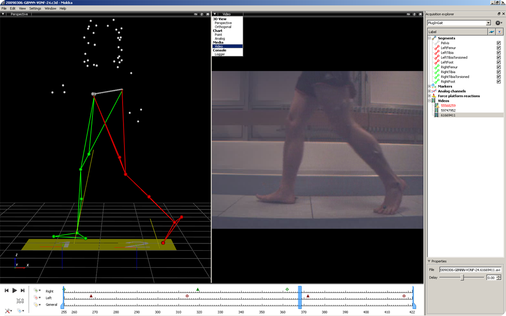

- To watch videos acquired during an acquisition you can proceed this way:
- Open an acquisition file which contains videos (e.g., c3d file) ;
- Choose the video option from the views' list ;
- At the bottom of the acquisition explorer section, you can select the video and drop it into the “Drop video from an acquisition explorer” window.
- To watch other videos you can proceed this way:
- First you have to open an acquisition file ;
- Then, import video files (AVI, MOV, MPEG, OGG, WMV). Several videos can be imported simultaneously ;
- Choose the video option from the media menu ;
- At the bottom of the acquisition explorer section, you can select the video and drop it into the “Drop video from an acquisition explorer” window.
The possible delay between the acquisition and the video can be adjusted by using the delay option.
Note: The acquisition file could be saved in C3D file format. The link between the videos, delay and the acquisition file will then be saved.

Video view and video's items in the acquisition explorer